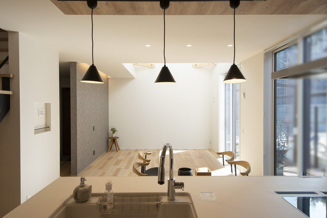
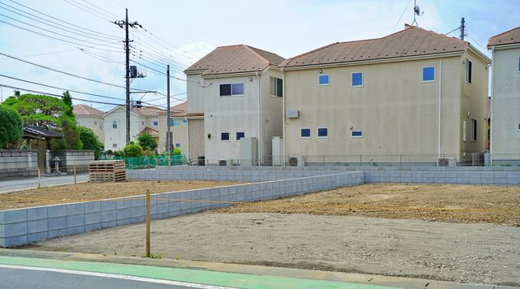

住宅ローンを組むから、手元のお金は要らない。
そう考えていると、土地の契約の日に慌てることになります。
契約の日には、ローンのお金はまだ出ていないからです。
その場での支払いまでが1日で済みます。
家づくりでは、お金を払う日が何度もある
注文住宅では、完成した日にまとめて払うわけではありません。
土地から買う場合、支払いの日は5回から7回ほどあります。
回数と割合は、会社や契約によって変わります。
いちばん最初の「土地の契約」だけは、ローンが間に合いません。
この記事では、いちばん最初の「土地の契約」の日に絞って書きます。
払うものは、大きく3つです。
土地の契約の日に払う、3つのお金
1. 手付金（土地の代金の5〜10％が目安）
契約を結んだしるしとして、売主さんに払うお金です。
土地の代金の5〜10％が多く、1,200万円の土地なら60万〜120万円になります。
売主さんとの相談で、もう少し低い金額に決まることもあります。
手付金は、上乗せで払うお金ではありません。
決済の日に、土地の代金の一部として差し引かれます。
先に払うか、あとで払うかの違いです。
2. 印紙代（契約書に貼る税金）
売買の契約書には、収入印紙を貼ります。
金額は土地の代金で決まり、2027年3月31日までに結ぶ契約は軽くなっています。
書面ではなく電子契約で結ぶ場合、印紙は要りません。
3. 仲介手数料の半分
不動産会社が間に入って土地を買うときに払う手数料です。
上限は法律で決まっていて、代金が400万円を超える土地なら
「代金×3％＋6万円」に消費税を足した金額です。
1,200万円の土地なら、上限は46万2,000円になります。
契約の日に半分、決済の日に残りの半分を払う形が多く見られます。
売主さんから直接買う土地なら、仲介手数料はかかりません。
1,200万円の土地なら、現金はいくら要るか
100万円前後の現金を、契約の日までに口座へ用意しておく。
定期預金を崩す、親から援助を受けるといった段取りは、
契約の日取りが決まる前に済ませておくと安心です。
土地に予算を使いすぎて、建物で削る。
この順番のつまずきが、いちばん取り返しがつきません。

奈良で新築を建てるといくら本体・諸費用・土地を分けて、総額の内訳を見られます。
手付金を払う前に、契約書で見る2つのこと
手付金を手放すと、契約をやめられる
契約のあとで買うのをやめたくなったら、
手付金をあきらめることで契約を解くことができます。
反対に売主さんの都合でやめる場合は、手付金の倍の金額を払うのが一般的です。
ただし、これができるのは相手が契約の実行に取りかかるまでです。
いつまで解約できるかは、契約書に日付で書かれています。
住宅ローンが通らなかったときの決まり
もうひとつ、必ず見てほしいのがローン特約です。
住宅ローンの審査に通らなかったとき、契約を白紙に戻して、
手付金を返してもらえるという決まりです。
この一文が契約書にあるか。
あるなら、どの銀行で・いくら借りる前提で・いつまでに結果を出すのか。
期限を過ぎてから審査に落ちても、手付金は戻りません。
ローンの事前審査は、土地の契約の前に通しておくのが基本です。
そのうえで、ローン特約の期限に余裕を持たせてもらいます。

ハザードマップを見る土地を契約する前に、水害と土砂災害の危険が分かります。
よくある質問
手付金は、住宅ローンで払えますか？
土地の契約の日には、住宅ローンのお金はまだ出ていません。手付金は手元の現金で払うのが基本です。手付金は決済の日に土地の代金の一部として差し引かれるので、ローンで借りる金額の中で調整されます。
手付金を少なくしてもらうことはできますか？
売主さんとの相談で、代金の5〜10％より低い金額に決まることはあります。ただし手付金が少ないと、売主さんも倍の金額を払って契約をやめやすくなります。金額は、不動産会社と相談して決めてください。
土地の契約で、印紙代はいくらかかりますか？
2027年3月31日までに作る売買契約書なら、代金が500万円を超えて1,000万円までは5,000円、1,000万円を超えて5,000万円までは1万円です。電子契約で結ぶ場合は印紙が要りません。
ローン特約とは何ですか？
住宅ローンの審査に通らなかったとき、土地の契約を白紙に戻して手付金を返してもらえる決まりです。契約書に入っているか、借りる銀行と金額、結果を出す期限を必ず確かめてください。期限を過ぎると使えません。
まとめ
- 土地の契約の日には、住宅ローンのお金はまだ出ていない
- 払うのは手付金・印紙代・仲介手数料の半分の3つ
- 1,200万円の土地なら、約84万〜144万円の現金を用意する
- 手付金は決済の日に、土地の代金の一部として差し引かれる
- 契約書ではローン特約の有無と期限を必ず見る
- 土地を決める前に、建物まで入れた総額を出しておく

奈良の工務店シバサンホームで、初めての家づくりに伴走しています。お金のことこそ正直に。モットーはスピード・誠実さ・楽しさ。